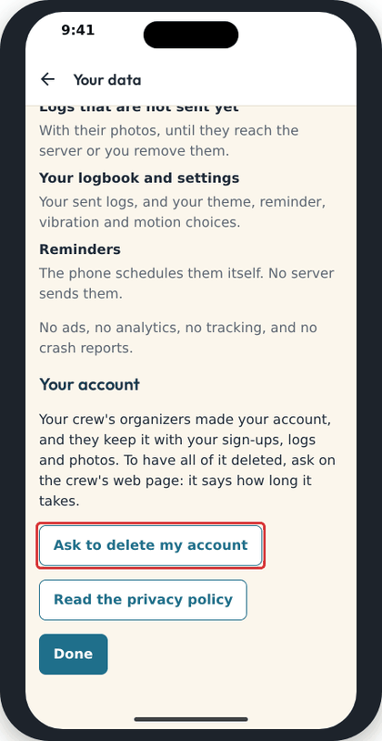

🏪 Lesson 9.4: The App Stores
Everything you have built so far runs on phones you control. The stores are the last door between your app and every volunteer with a phone, and they ask hard, fair questions: who are you, what does the app do with people's data, can people leave, and does it really work? Today you learn what each store asks for and what it really costs, answer the privacy questions for Shoreline Crew from its own code, give the app an honest Your data screen, and finish with the checklist you will use for every release you ever make.
🎯 Learning Objectives
By the end of this lesson, you will be able to:
- Name what Google Play and the App Store require before an app can be published: developer accounts and their real costs, permanent app ids, and the technical rules builds must meet
- Build a data inventory from an app's own code and use it to answer Apple's App Privacy details and Google Play's Data safety form
- Explain both stores' rules for privacy policies and account deletion, and give an app an honest in-app path to both
- Prepare a store listing within the stores' limits, and avoid the most common reasons apps are rejected in review
- Configure
eas submitfor a testing track, and work through a release checklist from code to production
📦 Code for this lesson
Starting code: lesson-35-start.zip · Finished code: lesson-35-end.zip. Each folder has a README with the commands to run it.
In This Lesson
👋 Welcome: The Last Door
Shoreline Crew now builds in the cloud (Lesson 9.2), takes updates and reports crashes (Lesson 9.3). It could be a store app tomorrow, except for everything the stores ask that has nothing to do with code: an account in your name, a listing with screenshots, a privacy policy, honest answers about every piece of data the app sends, a way for people to delete their account, and a reviewer at Apple who has to be able to sign in.
By the end of this lesson:
- You know the real costs and rules of both stores, as their official pages state them, and where to check them again, because they change.
- You can answer the privacy forms from the code. You will follow every piece of data in Shoreline Crew to where it goes, and turn that into the answers Apple and Google ask for.
- The app tells its users the same thing. A new Your data screen says what leaves the phone, links to the privacy policy, and starts an account deletion request, honestly, with the API the course has.
- You have a release checklist that covers code, config, privacy, listing, testing and submission.
Why it matters for your work: on a mobile team, "can we ship on Friday?" is rarely a question about code. It is about whether the privacy answers still match the app after a new library, whether the demo account still works, and whether anyone remembered the screenshots. Developers who can answer those questions are the ones trusted with releases. And for the volunteer deciding whether to install your app, the privacy label on the store page is often the first thing they read about you.
🌱 A rejection is a review comment, not a verdict
Most first apps get at least one rejection or a request for more information. Apple says on its review page that over 40% of unresolved issues come from one guideline, app completeness: crashes, placeholder content, missing information. Those are fixable in an afternoon. Read the message the way you read a red screen: it names the guideline, the screen and what is missing. Fix it, reply, resubmit. Every developer with an app in a store has been there.
💳 Two Stores, Two Accounts, Real Costs
Each store needs a developer account of its own, in the name of a person or an organization. Here is what the official pages said while this lesson was written:
| Apple Developer Program (App Store) | Google Play Console | |
|---|---|---|
| Fee | "99 USD per membership year, or in local currency where available" | A "US$25 one-time registration fee" |
| As a person | An Apple Account with two-factor authentication; "Your name will be displayed as the seller name of your apps on the App Store" | A personal account; Google may ask for a government ID and a credit card in your legal name, and checks your contact details |
| As an organization | A D-U-N-S Number (a free company identifier from Dun & Bradstreet), a public website and a work email on its domain | A D-U-N-S number and documents for the organization |
| Before your first release | Nothing extra | Newer personal accounts must run a closed test "with a minimum of 12 testers who have been opted in continuously for at least 14 days" and then apply for production access |
| Discounts | Eligible nonprofits, accredited schools and government bodies can ask for a fee waiver (not individuals) | None listed |
The fees are only part of the cost of a real store app. Shoreline Crew would also need:
- An https server for the API. The volunteers' phones cannot reach shoreline-api on your laptop, and Lesson 9.1's guard refuses a production build without an
https://address. Hosting costs money every month, for as long as the app exists. - A domain and two web pages: a privacy policy and an account deletion page. Static pages can be hosted for free (the way this course itself is hosted), but the domain usually costs a little each year.
- Twelve testers for two weeks, if you publish on Google Play from a new personal account. Plan that time before you promise anyone a launch date.
- Expo. The Free plan covered the builds in Lesson 9.2 and the updates in Lesson 9.3, with limits; check Expo's pricing page before a real launch.
A real Shoreline Crew would be published by the crew itself, as an organization: volunteers would see the crew's name as the seller, not a developer's, and as a nonprofit it could ask Apple for the fee waiver. That is a common setup when you build an app for a client: the client owns the store accounts and invites you to them (both consoles have team roles for that), so the app stays theirs when your contract ends.
🧩 Version note: fees and rules change
Every price, limit and rule in this lesson is quoted from Apple's, Google's and Expo's official pages as they read when the lesson was written, and each section names the page. Stores change these without asking anyone. Before you pay, plan a launch date or answer a form, open the page and read the current wording: that is a habit, not a sign of distrust in the lesson.
💡 Mental model: the harbor master
A boat can sail anywhere in its own bay. To use the public harbor, it checks in with the harbor master, who wants three things: papers that say who owns the boat (the developer account), a crew list and a cargo manifest that match what is really on board (the listing and the privacy answers), and a boat that floats (a build that works when the reviewer tries it). The harbor master does not care how nice the paint is. Most boats turned away had papers that did not match the cargo.
🪪 Ids and Technical Requirements
Lesson 9.1 gave Shoreline Crew three app ids under com.example, and warned that they must change before a store. Now it matters:
- The id is permanent. Once a build with an id is uploaded, the store knows the app by it forever. You cannot rename it later; you can only publish a different app.
com.exampleis refused. Google Play does not accept package names that start with it (Lesson 9.1), and it is not yours to use anyway.- Use a domain you control, reversed. If the crew owned
marisolcrew.org, the ids would beorg.marisolcrew.shorelinecrew,org.marisolcrew.shorelinecrew.previewand.dev. No domain yet? Use your own name in reverse-domain form (io.github.yournameif you have a GitHub account), but decide before the first upload.
The course's code keeps com.example, because the course cannot know your domain. Your copy should change it (Step 3), and Lesson 9.2's profile tests will tell you exactly which lines expect the old ids.
Each store also has technical rules for the build itself. They move every year; here is what they said, and how Shoreline Crew measures against them:
| Rule (official page) | Shoreline Crew |
|---|---|
| Google Play: new apps and updates must target Android 16 (API level 36) or higher (Play Console Help: target API level requirements) | React Native 0.88, in SDK 58, sets targetSdk = "36" in its Gradle versions file (measured in node_modules/react-native/gradle/libs.versions.toml). A new SDK each year keeps you current; staying on an old SDK eventually blocks updates |
Google Play: new apps upload an Android App Bundle (.aab), not an APK | The production profile's builds are store builds: EAS makes an .aab (Lesson 9.2: distribution: internal was what made APKs) |
| App Store: uploads must be built with a recent Xcode and iOS SDK (Apple's "Upcoming requirements" news page named Xcode 26 and the iOS 26 SDK) | EAS Build picks the Xcode image for your SDK version; Expo's docs list which. Again, a current SDK keeps you inside the rule |
| App Store: every build answers an export compliance (encryption) question, or waits as "Missing Compliance" (Expo's TestFlight guide) | Shoreline Crew only uses the encryption the phone provides (https, the Keychain), which Apple treats as exempt. Step 3 answers once, in app.config.ts, with ios.config.usesNonExemptEncryption: false. For your own app, read the question yourself: an app with its own encryption answers differently |
Last, the permissions. A store page lists what the app may ask for, and reviewers compare it with what the app does. Lesson 9.1's introspect shows the store build's list (Step 3 runs it). Two lines deserve a decision:
SYSTEM_ALERT_WINDOW("draw over other apps") comes from the template, for development tools. A volunteer's app has no use for it, so the production variant blocks it (Lesson 9.1's Exercise 2 showedblockedPermissions). Development builds keep it, in case the tools need it.READ_EXTERNAL_STORAGEandWRITE_EXTERNAL_STORAGEcarrymaxSdkVersion 32: they apply only to Android 12 and older, where some libraries still need them. They stay.
On iPhone, introspect shows one sentence Shoreline Crew did not write: NSLocalNetworkUsageDescription from Expo Dev Launcher, part of expo-dev-client (Lesson 9.2). Expo's docs say the development client is meant for development builds; whether a store build ever shows that question is something to check on a real iPhone before you submit, and to explain in the review notes if a reviewer asks.
🔎 Privacy Details: What Leaves the Phone
Both stores show a privacy summary on the app's page, built from a form you fill in: Apple's App Privacy details (people call them privacy "nutrition labels") and Google Play's Data safety section. Google's help page is blunt: "Even developers with apps that do not collect any user data must complete this form." Both forms ask about the data your app collects, and both define the word the same way:
- Apple: "'Collect' refers to transmitting data off the device in a way that allows you and/or your third-party partners to access it for a period longer than what is necessary to service the transmitted request in real time." And: "Data that is processed only on device is not 'collected'."
- Google: "'Collect' means transmitting data from your app off a user's device." Data "only processed locally on the user's device" is exempt, and so is data processed "ephemerally" (only in memory, for the request).
- Google also asks about sharing, "transferring user data collected from your app to a third party", with exceptions such as a service provider working for you, or a transfer the user starts themselves (the share sheet).
- Both count the code you add: Apple asks you to disclose "the practices of third-party partners whose code you integrate into your app", which includes SDKs.
So the question for every piece of data is not "does the app touch it?" but "does it leave the phone, and is it kept?" You cannot answer that from memory. You answer it from the code, the way Lesson 5.1 found the single API address: every request in Shoreline Crew goes through one fetch call in src/api/client.ts (Step 1 proves it), to one server, the crew's. Following each function that calls it, and each native module, gives this inventory:
| Data | In the code | Leaves the phone? | Where it goes |
|---|---|---|---|
| Email address and password | sign-in.tsx → postSignIn | Yes, at sign-in | The crew's server, which keeps the email with the account |
| Sign-in token | auth/session.ts (SecureStore), sent with every request | Sent, not kept by anyone new | Back to the server that made it |
| Sign-ups, cancellations, check-ins | postSignup, cancelSignup, checkIn | Yes | The crew's server, with your account |
| Debris logs (counts, bags, weight, note, time) | the queue → postLog | Yes | The crew's server, with your account |
| Photos added to a log | the queue → postPhoto | Yes, only the ones you add | The crew's server |
| Location | DistancePanel, SiteMap (blue dot) | No: the distance is worked out on the phone | Nowhere (but see the map SDKs below) |
| Settings, logbook, unsent logs, reminders | settings.ts, storage/logbook.ts, state/logQueue.ts, reminders.ts | No | AsyncStorage, SQLite, files, the phone's own scheduler |
| Crash reports | monitoring/reportError.ts | No: it prints in development and does nothing in a build (Lesson 9.3) | Nowhere, until you plug in a service |
| A logbook CSV | ShareLogbook (Lesson 6.5) | Only where the volunteer sends it | The volunteer's choice in the share sheet |
Two things the app's own code does not show, and which still count:
- The map SDKs. On Android,
react-native-mapsdraws with Google's Maps SDK, and Google's own page on Play disclosures says that SDK collects device and request details, crash traces from its own code, the IP address and a pseudonymous id, and that "you are solely responsible for deciding how to respond" in the form. On iPhone the map is Apple's; Apple's page says "You are not responsible for disclosing data collected by Apple." (Thereact-native-mapspackage also ships an iOS privacy manifest that declares precise location, conservatively.) - Expo's update check, once Lesson 9.3's project id is in place. Expo's privacy explainer says update requests "do not contain identifying information such as unique device identifiers"; they carry the platform, the project id and a random installation id, which Expo's docs say to "treat as pseudonymous data".
Photos have one more question: can a photo carry where it was taken? Lesson 6.2 asked the picker for no EXIF data and re-encoded the image, which should leave no location in the uploaded file. Check one uploaded photo from a real phone before you answer "no location": if it still had GPS data, location would leave the phone after all.
From the inventory, Shoreline Crew's answers. Where a form leaves room for judgment, the table says so:
| Data | App Store: App Privacy | Google Play: Data safety |
|---|---|---|
| Email address | Contact Info › Email Address, linked to the user, App Functionality | Personal info › Email address, collected, required, App functionality and Account management |
| Account id on logs and sign-ups | Identifiers › User ID, linked, App Functionality | Personal info › User IDs, collected, App functionality |
| Debris logs | User Content › Other User Content, linked, App Functionality | App activity › Other user-generated content, collected, App functionality |
| Sign-ups and check-ins | User Content › Other User Content (judgment: these are records the volunteer makes) | App activity › Other actions, collected, App functionality |
| Photos | User Content › Photos or Videos, linked, App Functionality | Photos and videos › Photos, collected, optional, App functionality |
| Location | Not collected (processed only on the device) | Not collected (processed only on the device) |
| Maps SDK on Android | Not applicable (Apple Maps on iPhone) | Judgment: Google's page lists what the SDK collects; App info and performance › Crash logs and Device or other IDs are the cautious answers |
| Update checks | Judgment: a random id per installation, not linked to the account, used only to deliver updates. Read Expo's explainer and decide; if unsure, disclose | |
| Tracking, ads, analytics | No tracking; no data used for advertising or analytics | No data shared; none used for advertising or analytics |
| Encryption in transit | (not asked) | Yes, only because the production build must use an https:// server (Lesson 9.1's guard) |
| Deletion requests | (asked in review, see the next section) | Yes, with the web page's address |
"Linked to the user" is the honest answer for almost everything a signed-in app sends: Apple counts data as not linked only if it is stripped of identifiers before it is collected, and Shoreline Crew's logs are stored with the volunteer's account on purpose. Note also what the app does not send: it never sends a name or phone number. The organizers type those into their own HQ, so they are the crew's data, not the app's collection. An app with its own sign-up form would collect them and say so.
💡 Mental model: the cargo manifest
The privacy form is a cargo manifest: a list of what the boat carries off the beach. You write it by walking the deck with a clipboard (reading the code), not by remembering what you loaded last month. Every time someone brings a new crate on board, a library, a new field in a form, a crash reporter, the manifest changes. Step 1's searches are the walk around the deck, and src/utils/privacy.ts (Step 2) is the clipboard everyone on the team can read.
🛑 Wrong answers are a policy problem, not a typo
Both stores treat privacy answers that do not match the app as a violation, and the answers are public: volunteers decide whether to trust you from them. When you add a library, run Step 1's searches again and read the library's own privacy notes (on iPhone, its PrivacyInfo.xcprivacy file in node_modules). When you add crash reporting (Lesson 9.3), add Diagnostics › Crash Data on Apple's form and App info and performance › Crash logs on Google's, and name the service in your privacy policy.
🗑️ Privacy Policy and Account Deletion
Two more rules apply to Shoreline Crew, both about leaving: knowing what happens to your data, and taking it with you when you go.
A privacy policy, inside the app. Apple's App Store Review Guideline 5.1.1(i): "All apps must include a link to their privacy policy in the App Store Connect metadata field and within the app in an easily accessible manner." The policy must say what is collected, how and why, that third parties protect it equally, how long it is kept, and "how a user can revoke consent and/or request deletion of the user's data". Google Play asks for a privacy policy link in the Play Console too. The inventory above is most of a privacy policy already, in plain words.
Account deletion. Both stores have a rule, and both start with the same condition:
- Apple, guideline 5.1.1(v): "If your app supports account creation, you must also offer account deletion within the app." Apple's support page adds: delete "the entire account record, along with associated personal data"; "only offering to temporarily deactivate or disable an account is insufficient"; "If people need to visit a website to finish deleting their account, include a link directly to the page"; a manual process is fine if you tell people how long it takes; and apps outside highly regulated industries "should not require people to make a phone call, send an email" or go through support.
- Google Play: "If your app allows users to create an account from within your app", it must "provide users with an in-app path to delete their app accounts and associated data" and "a web link resource where users can request app account deletion and associated data deletion", entered in the Data safety form.
Shoreline Crew does not create accounts: the organizers make them, and the app only signs in. So, read to the letter, neither deletion rule may apply. Build it anyway. The privacy policy has to explain deletion regardless, reviewers judge the spirit of the rules, volunteers expect it, and the first time the crew adds "Join the crew" to the app, the rule applies in full.
Here the course has to be honest about its API. shoreline-api is fixed for this course, and it has no endpoint that deletes an account. So the Your data screen (Step 2) does what Apple's page allows when deletion finishes elsewhere: the button starts the request in the app and opens a web page where the organizers receive it. A real app does more, and this is the work to plan for your own:
- The server deletes or anonymizes. The account, the email, the sign-ups, the photos; the debris logs either deleted or kept without the person (the crew's total of 312 bags can stay true without saying who carried them). Google allows keeping some data "for legitimate reasons" if you tell people. Every session token of that account stops working.
- The phone forgets. The session in SecureStore, the unsent logs and their photo files, the logbook rows in SQLite, the scheduled reminders. Each of those already has its own code in Shoreline Crew; deletion calls all of them.
- The person is told how long it takes, and when it is done.
🖼️ The Store Listing
A listing is the page people see before they install. eas submit uploads a build; it does not touch the listing (Expo's docs: it "does not manage store listing metadata, screenshots, or release notes"). You fill the listing in each console. What each one asked for:
| App Store Connect | Google Play Console | |
|---|---|---|
| Name | 2 to 30 characters | Up to 30 characters |
| Short text | Subtitle, up to 30 characters; promotional text, up to 170 | Short description, up to 80 characters |
| Description | Up to 4,000 characters | Full description, up to 4,000 characters |
| Keywords | Up to 100 bytes, comma-separated | None: Google warns that repeated or irrelevant keywords in the texts can get an app suspended |
| Icon | From the build (the 1024 x 1024 icon.png of Lesson 2.3) | A separate 512 x 512 PNG, up to 1024 KB |
| Screenshots | 1 to 10 per size, no transparency; at least one for the iPhone size Apple currently requires (the page named "iPhone with Dynamic Island (medium display)", such as 1206 x 2622 pixels); iPad only if the app runs on iPad | At least 2, up to 8 per device type; 320 to 3,840 pixels per side, the long side at most twice the short one |
| Other | Privacy policy URL (required), support URL, category, age rating questions, review notes | Feature graphic 1024 x 500, privacy policy URL, category, content rating questionnaire, Data safety form |
Screenshots come from the real app on a phone or a simulator, not from the web preview: they must show the app as people will see it ("Inaccurate screenshots" is on Apple's list of common rejections). Pick the four or five screens that tell the story: Cleanups, a cleanup's details, the debris log form, the Logbook's tallies, My cleanups. Shoreline Crew is iPhone-only (Lesson 9.1 left out supportsTablet), so it needs no iPad screenshots.
A first draft of Shoreline Crew's texts, within the limits:
| Field | Text | Length |
|---|---|---|
| Name | Shoreline Crew | 14 |
| Subtitle (Apple) | Beach cleanups near you | 23 |
| Short description (Google) | Join beach cleanups, log what your crew collects, even with no signal. | 70 |
🧐 Review and Common Rejections
Both stores review apps before they reach the public. Apple's App Review page says it typically reviews "at least 50% of submissions in less than 24 hours and 90% in less than 48 hours"; Google Play's reviews vary, and first apps from new accounts can take longer. Apple's page lists the problems it sees most. Here they are, with what each would mean for Shoreline Crew:
| Common issue (Apple's list) | The Shoreline Crew version |
|---|---|
| Crashes and bugs | Lesson 9.3's crash screen helps, but the reviewer must never see it: test the exact build you submit |
| Incomplete information | The reviewer cannot sign in: guideline 2.1 asks you to "include demo account info (and turn on your back-end service!)". A real server, a reviewer account, and the password in the review notes |
| Broken links, placeholder content | The example.org pages in src/utils/privacy.ts: replace them with real pages before you submit |
| Privacy policy issues | No link in the app, or a policy that does not match the privacy answers |
| Unclear data access requests | Permission sentences that do not say why. Shoreline Crew's (Lesson 6.1) name the feature: "to show how far you are from a cleanup's meeting point" |
| Inaccurate screenshots | Screenshots from the web preview, or of screens the app does not have |
| Not enough lasting value, web clippings | Guideline 4.2 asks for more than "a repackaged website". Offline logs, the camera, location and reminders make Shoreline Crew a real app |
Some features cannot be tried by a reviewer at a desk. Checking in needs the organizer's code on the day of a cleanup. Guideline 2.1 expects you to provide what review needs ("such as login credentials or a sample QR code"), so the review notes give the reviewer a way: for example, an organizer account on the review server that can see the day's code, and a cleanup scheduled for every day of the review. Writing those notes is Exercise 2.
🧪 Testing Tracks and eas submit
Neither store makes you release to everyone at once. Both have tracks for testers, and that is where every upload should land first:
| Google Play | App Store (TestFlight) | |
|---|---|---|
| Your team | Internal testing: "up to 100 testers per app", available quickly, and "might not be subject to standard Play policy or security reviews" | Internal testers: "up to 100 members of your development team" with roles in App Store Connect |
| Wider testing | Closed testing (invited testers; the 12-tester, 14-day rule uses this track), then open testing (anyone can join from the store) | External testers: "up to 10,000", by email or a public link; the first build goes through review |
| Everyone | Production, optionally to a percentage of users first | App Store release, after App Review |
| Limits | Apps only on internal testing are exempt from showing a Data safety section | "You can test a build for up to 90 days" |
eas submit uploads a finished build to a store, from your computer or CI, so you do not download it and upload it again by hand. EAS CLI 27.10 says what it takes:
npx eas-cli@latest submit --helpExpected output (trimmed)
submit app binary to App Store and/or Play Store
USAGE
$ eas submit [-p android|ios|all] [-e <value>] [--latest | --id <value> | --path <value> | --url <value>] [--what-to-test <value>] [--verbose] [--wait] [--verbose-fastlane] [-g <value>...] [--non-interactive] [--auto-testflight-setup]
FLAGS
-e, --profile=<value> Name of the submit profile from eas.json. Defaults to "production" if defined in eas.json.
-g, --groups=<value>... Internal TestFlight testing groups to add the build to (iOS only). Learn more: https://developer.apple.com/help/app-store-connect/test-a-beta-version/add-internal-testers
-p, --platform=<option> <options: android|ios|all>
--[no-]auto-testflight-setup Set up an internal TestFlight group for the app (iOS only)
--id=<value> ID of the build to submit
--latest Submit the latest build for specified platform
--non-interactive Run command in non-interactive mode
--path=<value> Path to the .apk/.aab/.ipa file
--url=<value> App archive url
--verbose Always print logs from EAS Submit
--verbose-fastlane Enable verbose logging for the submission process
--[no-]wait Wait for submission to complete
--what-to-test=<value> Sets the "What to test" information in TestFlight (iOS only).
DESCRIPTION
submit app binary to App Store and/or Play Store
...With no --profile, it uses the production submit profile in eas.json, the empty one Lesson 9.2 added. Step 6 gives it one setting, so Android uploads land on the internal testing track, never straight in front of the public. What each store needs before the first submission (from Expo's submit guides; this course had no store account to run them with):
- Google Play: the app created in the Play Console ("Create app"), and a Google Service Account key (a JSON file) that lets EAS upload for you. That key is a password: never commit it; EAS can keep it for you as a credential. Expo's guide says the first
eas submit"creates your app's first release on the internal testing track", and the app stays a draft until the listing and setup tasks in the Console are done. - App Store: a paid Apple Developer Program membership, the app's id in App Store Connect (
ascAppIdin the submit profile) and an App Store Connect API key for non-interactive runs. After processing, the build appears in TestFlight; releasing it is a separate step: submitting it for review in App Store Connect.
Build and submit can be one command: npx eas-cli@latest build --platform android --profile production --auto-submit submits with the submit profile of the same name when the build finishes. For Shoreline Crew, that command stops before it starts: the production profile refuses to build without an https:// API (Lesson 9.1), and the course's API runs on your computer. That is the honest end of this course's road for Shoreline Crew. Your own app in Lesson 10.1, with a real server, can go all the way.
✅ The Release Checklist
Pilots use checklists not because they forget how to fly, but because the cost of forgetting one step is too high. Here is the course's, in the order you meet the steps. Copy it into your project's notes and add to it every time a release teaches you something.
| Stage | Check |
|---|---|
| Code | Type check, lint and tests pass (CI is green, Lesson 9.3); the exact build you will submit was tried on a real Android phone and iPhone |
| Identity | App ids on your own domain (permanent); name, icon and splash final; version raised for a release people should notice; build numbers left to EAS (Lesson 9.3) |
| Config | Production profile with an https:// API; permission sentences say why; permissions list audited (introspect); encryption answer set; secrets only in EAS environment variables, never in the repo |
| Privacy | Inventory redone from the code and libraries; App Privacy and Data safety answers match it; privacy policy and deletion pages live; both linked from the app |
| Listing | Texts within limits; screenshots from the real app; support URL; category; age and content rating questionnaires |
| Review | Server running; demo account and anything else a reviewer needs (codes, a scheduled event) in the review notes |
| Testing | Uploaded to internal testing / TestFlight first; testers' feedback read; on a new Google Play personal account, the closed test done |
| Release | Production release (Google Play can go to a percentage of users first); watch crash reports and updates (Lesson 9.3); have an update or a rollback ready |
⚠️ Common Mistakes
The outputs below were printed by the real tools on this course's project. Store consoles and reviews could not be used for this lesson: their behavior comes from Apple's, Google's and Expo's documentation.
⚠️ Changing the app ids and forgetting the tests
You replace com.example with your own domain in app.config.ts, and Lesson 9.2's profile tests fail. That is the tests doing their job: they say exactly which ids they expected.
npm test -- --watchAll=false app.configExpected output (trimmed; with the ids changed to org.marisolcrew)
FAIL ./app.config.test.ts
✕ builds Shoreline Dev from the development profile (186 ms)
✕ builds Shoreline Preview from the preview profile, with an API address (1 ms)
✕ refuses the production profile until it has an https API address (2 ms)
✓ gives each release profile its own update channel (Lesson 9.3)
✓ sends store uploads to testers first (Lesson 9.4) (1 ms)
● builds Shoreline Dev from the development profile
expect(received).toBe(expected) // Object.is equality
Expected: "com.example.shorelinecrew.dev"
Received: "org.marisolcrew.shorelinecrew.dev"
31 | const config = configFor(easJson.build.development.env);
32 | expect(config.name).toBe('Shoreline Dev');
> 33 | expect(config.android?.package).toBe('com.example.shorelinecrew.dev');
| ^
34 | });
35 |
36 | it('builds Shoreline Preview from the preview profile, with an API address', () => {
at Object.toBe (app.config.test.ts:33:35)
...
Tests: 3 failed, 2 passed, 5 total
Snapshots: 0 totalUpdate the three expected ids in app.config.test.ts to your own, and the five tests pass again. Change the ids once, before the first upload: after it, the store knows the app by them forever.
⚠️ Trying a production build with the local API
Lesson 9.1's guard stops a production config that points at plain http. With your .env.local still on the computer's address:
APP_VARIANT=production npx expo config --type publicExpected output (trimmed)
env: load .env.local
env: export EXPO_PUBLIC_API_URL
Error: Error reading Expo config at ~/shoreline/shoreline-crew/app.config.ts:
A production build needs an https:// EXPO_PUBLIC_API_URL, not "http://localhost:4000".
...This is the guard working, not a bug. A store app needs a server every volunteer's phone can reach over https; no setting makes the laptop's API one. (On EAS, .env.local is not used at all: the production profile has no address, so the same guard stops the build there, as Lesson 9.2 showed.)
⚠️ Answering the privacy forms from memory
"We don't collect location" is true of Shoreline Crew's code and possibly false of a library it carries. Answer from Step 1's searches, then read the notes of every SDK that talks to the network (on Android, Google's Maps SDK has its own page about what it collects). Redo it at every release that adds a package.
⚠️ Submitting with placeholder links
The Your data screen opens https://shorelinecrew.example.org/…, which goes nowhere. In the course that is fine; in a store build it is the "Broken links" and "Placeholder content" rejections at once. Put real pages up first, change src/utils/privacy.ts, then make the build.
⚠️ Committing the store keys
The Google Service Account JSON file and the App Store Connect .p8 key can publish apps in your name. If one lands in Git, treat it as leaked: revoke it in the console and make a new one. Keep them out of the project folder (or add their names to .gitignore before you save them there), or let EAS store them as credentials.
🛠️ Project: Shoreline Crew, Store-Ready
You follow Shoreline Crew's data through its code, give the app a Your data screen, make the store build's config honest, answer both privacy forms, draft the listing, point eas submit at a testing track, and walk the release checklist. Everything runs on your computer, with no store account. In shoreline-crew, with the API running in its second terminal as usual.
Step 1: Follow the data through the code (10 min)
First, every place the app talks to the network. On macOS, Linux or Git Bash (in PowerShell, use VS Code's search instead: Ctrl+Shift+F (⌘ Cmd+Shift+F on a Mac), the word fetch, "Match Whole Word" on):
grep -rnw "fetch" src --include="*.ts*" --exclude-dir=mocks --exclude-dir=test --exclude="*.test.*"Expected output
src/hooks/useRefreshOnFocus.ts:6: * Each time this screen comes back into view, fetch its stale answers again: the queries whose
src/api/client.ts:302: response = await fetch(url, { ...init, headers });
src/api/client.ts:304: // In the browser a failed fetch is a TypeError; on a phone, Expo's fetch throws its own error
src/components/UpdateStatus.tsx:8:// Which code this app runs, and (in preview and production builds) a way to fetch a new version
src/utils/photoFiles.web.ts:6: const photo = await (await fetch(uri)).blob();
src/utils/photoFiles.web.ts:13: return await (await fetch(uri)).blob();Three lines are comments. photoFiles.web.ts reads a photo the web preview already holds (a local address, not the network). That leaves one real request, client.ts line 302: every byte Shoreline Crew sends goes through it to EXPO_PUBLIC_API_URL. Now the native modules that touch personal data:
grep -rlE "expo-(location|image-picker|notifications|secure-store|sqlite)" src --exclude-dir=mocks --exclude-dir=test --exclude="*.test.*"Expected output
src/notifications/reminders.ts
src/hooks/useReminderTaps.ts
src/storage/logbook.ts
src/components/LogPhotos.tsx
src/components/DistancePanel.tsx
src/components/SiteMap.tsx
src/auth/session.tsOpen each file and ask the one question: does what it reads leave the phone? DistancePanel.tsx reads the location and computes a distance on the phone; LogPhotos.tsx keeps photo files that the queue later uploads; the rest store or schedule on the phone. Compare your answers with the inventory in "Privacy Details". Then do the same for package.json's dependencies: which of them could send anything by themselves? (For Shoreline Crew: the map SDKs and, once a project id is set, expo-updates.)
Step 2: A Your data screen (20 min)
The inventory belongs in the app too, in words a volunteer understands. Put the facts in one file, so the screen and the store forms have a single source:
// What Shoreline Crew does with a volunteer's data (Lesson 9.4), in the app's own words. The Your data
// screen shows it, and the stores' privacy forms are answered from the same facts: when the app
// changes what it sends, change this file, then the forms.
export type DataFact = { what: string; detail: string };
// Sent to the crew's server (the address in EXPO_PUBLIC_API_URL) and kept there, with your account
export const sentToServer: DataFact[] = [
{
what: 'Your email address and password',
detail: 'When you sign in. The server answers with your name, your role and a sign-in key.',
},
{
what: 'Your sign-ups',
detail: "The cleanups you join or cancel, and the day's code when you check in.",
},
{
what: 'Your debris logs',
detail: 'The counts, bags, weight, note and time of each log you send.',
},
{
what: 'Photos you add to a log',
detail: 'Only the photos you take or pick for it.',
},
];
// Kept on this phone, never sent
export const keptOnPhone: DataFact[] = [
{
what: 'Your location',
detail: 'Only while you look at a cleanup, to show how far away it is and where you are.',
},
{
what: 'Your sign-in key',
detail: "In the phone's secure storage, until you sign out.",
},
{
what: 'Logs that are not sent yet',
detail: 'With their photos, until they reach the server or you remove them.',
},
{
what: 'Your logbook and settings',
detail: 'Your sent logs, and your theme, reminder, vibration and motion choices.',
},
{
what: 'Reminders',
detail: 'The phone schedules them itself. No server sends them.',
},
];
export const notCollected = 'No ads, no analytics, no tracking, and no crash reports.';
// Both stores ask for these pages on the web, and for a way to reach them from inside the app.
// Replace them with your own pages before a store release: a link that goes nowhere is a rejection.
export const privacyPolicyUrl = 'https://shorelinecrew.example.org/privacy';
export const accountDeletionUrl = 'https://shorelinecrew.example.org/delete-account';Then the screen, a modal like Lesson 4.2's Before you go:
import { router } from 'expo-router';
import { Linking, StyleSheet, View } from 'react-native';
import { AppText } from '@/components/AppText';
import { Button } from '@/components/Button';
import { Screen } from '@/components/Screen';
import { spacing } from '@/theme/spacing';
import {
accountDeletionUrl,
type DataFact,
keptOnPhone,
notCollected,
privacyPolicyUrl,
sentToServer,
} from '@/utils/privacy';
// Your data (Lesson 9.4): what leaves the phone, what stays, the privacy policy, and how to ask
// for your account to be deleted. A modal, like Before you go.
export default function YourDataScreen() {
function done() {
if (router.canGoBack()) {
router.back();
} else {
router.replace('/');
}
}
return (
<Screen scroll edges={['bottom', 'left', 'right']}>
<AppText>What Shoreline Crew sends, what stays on your phone, and how to leave.</AppText>
<Facts heading="Sent to your crew's server" facts={sentToServer} />
<Facts heading="Only on this phone" facts={keptOnPhone} />
<AppText variant="muted">{notCollected}</AppText>
<AppText variant="heading" accessibilityRole="header">
Your account
</AppText>
{/* Honest about the server: shoreline-api has no way to delete an account, so the request
goes to the organizers through a web page (a real app would also delete it in the app) */}
<AppText>
Your crew's organizers made your account, and they keep it with your sign-ups, logs and
photos. To have all of it deleted, ask on the crew's web page: it says how long it
takes.
</AppText>
<Button
label="Ask to delete my account"
accessibilityRole="link"
accessibilityHint="Opens a web page"
onPress={() => Linking.openURL(accountDeletionUrl)}
/>
<Button
label="Read the privacy policy"
accessibilityRole="link"
accessibilityHint="Opens a web page"
onPress={() => Linking.openURL(privacyPolicyUrl)}
/>
<Button label="Done" variant="primary" onPress={done} />
</Screen>
);
}
function Facts({ heading, facts }: { heading: string; facts: DataFact[] }) {
return (
<View style={styles.part}>
<AppText variant="heading" accessibilityRole="header">
{heading}
</AppText>
{facts.map(({ what, detail }) => (
// One element for a screen reader: what, then the detail
<View key={what} accessible style={styles.fact}>
<AppText style={styles.what}>{what}</AppText>
<AppText variant="muted">{detail}</AppText>
</View>
))}
</View>
);
}
const styles = StyleSheet.create({
part: {
gap: spacing.sm,
},
fact: {
gap: spacing.xs,
},
what: {
fontWeight: '600',
},
});accessibleon each fact'sViewmakes the two lines one element for VoiceOver and TalkBack (Lesson 8.1), so "Your location" and its explanation are read together.- The two web links are
Buttons withaccessibilityRole="link"and a hint, so a screen reader says they leave the app.Linking.openURLopens the phone's browser (Lesson 6.3 used it for Maps). - The account text says what really happens: the organizers delete the account after a request. It does not promise a button that deletes it, because the API cannot.
Register it as a modal in the root layout, next to Before you go:
/>
+ {/* What the app sends and keeps, the privacy policy, account deletion (Lesson 9.4) */}
+ <Stack.Screen name="your-data" options={{ presentation: 'modal', title: 'Your data' }} />
{/* The debris log form. Open to everyone, so a link to it always lands: a guest is askedAnd give Profile a way in, after Before you go, so it is easy to find for everyone, signed in or not:
</Link>
+ <AppText variant="heading" accessibilityRole="header">
+ Your data
+ </AppText>
+ <AppText>What the app sends, what stays on your phone, and deleting your account.</AppText>
+ {/* The stores want the privacy policy and account deletion easy to find (Lesson 9.4) */}
+ <Link href="/your-data" asChild>
+ <Button label="Your data and privacy" />
+ </Link>
{/* Which API this build talks to: the first thing to check when a phone shows no cleanups */}Restart npx expo start if it was running (a new route), open the web preview, go to Profile and press Your data and privacy:

src/utils/privacy.ts, the same facts you give the stores' privacy forms. Web preview: on a phone the modal slides up with its own header.Scroll to the end:

📱 On your phone
In Expo Go or Shoreline Dev, the screen should slide up as a modal with a native header, like Before you go. Ask to delete my account and Read the privacy policy should open the phone's browser on the example.org addresses, which do not exist: that is expected in the course. With VoiceOver or TalkBack, each fact should be read as one item, and the two buttons announced as links. This could not be checked on a phone for this lesson.
Step 3: Store-ready config (15 min)
Two answers the store build should give by itself: the encryption question, and no "draw over other apps" permission:
bundleIdentifier: variants[variant].appId,
+ // App Store Connect asks every build about encryption (export rules). Shoreline Crew only uses
+ // what the phone itself provides (https, the Keychain), which is exempt: answer once, here.
+ config: { usesNonExemptEncryption: false },
},
// ...
package: variants[variant].appId,
+ // The template asks for "draw over other apps", which only development tools use. A store
+ // build leaves it out, so the store page and the phone's settings do not list it (Lesson 9.4)
+ blockedPermissions:
+ variant === 'production' ? ['android.permission.SYSTEM_ALERT_WINDOW'] : [],
adaptiveIcon: {Check what the production build would carry, with a made-up https address for the guard (Lesson 9.1). The second part keeps only the lines about permissions and encryption:
APP_VARIANT=production EXPO_PUBLIC_API_URL=https://crew-api.example.org npx expo config --type introspect | grep -E "ITSApp|UsageDescription|permission\.|tools:node"In PowerShell, set the two variables first ($env:APP_VARIANT = "production", $env:EXPO_PUBLIC_API_URL = "https://crew-api.example.org"), run npx expo config --type introspect | Select-String "ITSApp|UsageDescription|permission\.|tools:node", then remove them with Remove-Item Env:APP_VARIANT, Env:EXPO_PUBLIC_API_URL.
Expected output (trimmed: the same lines appear again further down)
ITSAppUsesNonExemptEncryption: false,
NSLocalNetworkUsageDescription: 'Expo Dev Launcher uses the local network to discover and connect to development servers running on your computer.',
NSCameraUsageDescription: 'Shoreline Crew uses your camera to photograph the debris you collected at a cleanup.',
NSLocationWhenInUseUsageDescription: "Shoreline Crew uses your location to show how far you are from a cleanup's meeting point.",
'android:name': 'android.permission.INTERNET'
'android:name': 'android.permission.VIBRATE'
'android:name': 'android.permission.READ_EXTERNAL_STORAGE',
'android:name': 'android.permission.WRITE_EXTERNAL_STORAGE',
'android:name': 'android.permission.ACCESS_COARSE_LOCATION'
'android:name': 'android.permission.ACCESS_FINE_LOCATION'
'android:name': 'android.permission.SYSTEM_ALERT_WINDOW',
'tools:node': 'remove'
'android:name': 'android.permission.RECORD_AUDIO',
'tools:node': 'remove'
...ITSAppUsesNonExemptEncryption: false is the encryption answer. On Android, SYSTEM_ALERT_WINDOW now has 'tools:node': 'remove', the same way the template already removed RECORD_AUDIO: the store build will not ask for it. Run the same command with APP_VARIANT=preview and it is still there: only production blocks it.
Now your own ids. Choose them (see "Ids and Technical Requirements"), replace com.example.shorelinecrew in variants with yours, and run npm test -- --watchAll=false app.config. Three tests fail, as Common Mistakes shows; update their expected ids and run it again. (The course's download keeps com.example, so its tests stay as they are.)
Step 4: Answer the privacy forms (20 min)
Without an account you cannot open the real forms, but you can fill them in on paper, which is how teams prepare them anyway. In your notes, make two lists for Shoreline Crew:
- App Store, App Privacy: for each data type you collect, its category and name, whether it is linked to the user, whether it is used for tracking, and its purposes. Use the table in "Privacy Details" and check each row against your Step 1 findings.
- Google Play, Data safety: for each data type, collected or shared, required or optional, its purposes; then the security questions: encrypted in transit, and how people can request deletion.
Decide the two judgment rows (the Android Maps SDK and the update check) and write one sentence for each: why you answered as you did. A reviewer, a colleague or a future you will ask.
Then draft a one-page privacy policy from the same lists, in plain words: what the app collects and why, who else receives it (the crew's server host; Expo for updates; Google for maps on Android), how long it is kept, and how to ask for deletion. It will become the page behind privacyPolicyUrl.
Step 5: Draft the listing (10 min)
Write Shoreline Crew's listing texts in your notes, checking the limits as you go: the name, Apple's subtitle and promotional text, Google's short description, and a description of three short paragraphs (what it does, offline logging, privacy in one sentence). Then list the five screens you would photograph for screenshots, in order, with one line each for what the screenshot should show. Keep the 1024 x 1024 icon from Lesson 2.3 for Apple and note that Google needs a 512 x 512 copy.
Step 6: A submit profile for testers (10 min)
Fill in the empty production submit profile from Lesson 9.2, so Android uploads go to internal testing:
"submit": {
- "production": {}
+ "production": {
+ "android": {
+ "track": "internal"
+ }
+ }
}EAS CLI fills in the rest of the Android settings with its defaults (read with EAS CLI's own eas.json reader for this lesson): releaseStatus completed and changesNotSentForReview false. On iOS, there is nothing to set until you have an ascAppId. Guard the store settings with one more test, next to Lesson 9.3's channel test:
});
+
+it('sends store uploads to testers first (Lesson 9.4)', () => {
+ // eas submit uses the "production" submit profile: Android builds land on internal testing
+ expect(easJson.submit.production.android.track).toBe('internal');
+ // ...and every App Store build answers the encryption question by itself
+ const config = configFor({
+ ...easJson.build.production.env,
+ EXPO_PUBLIC_API_URL: 'https://crew-api.example.org',
+ });
+ expect(config.ios?.config?.usesNonExemptEncryption).toBe(false);
+ // ...and the store app does not ask to draw over other apps
+ expect(config.android?.blockedPermissions).toEqual(['android.permission.SYSTEM_ALERT_WINDOW']);
+});npm test -- --watchAll=false app.configExpected output (the course's ids)
PASS ./app.config.test.ts
✓ builds Shoreline Dev from the development profile (8 ms)
✓ builds Shoreline Preview from the preview profile, with an API address (1 ms)
✓ refuses the production profile until it has an https API address (8 ms)
✓ gives each release profile its own update channel (Lesson 9.3) (1 ms)
✓ sends store uploads to testers first (Lesson 9.4) (1 ms)
Test Suites: 1 passed, 1 total
Tests: 5 passed, 5 total
Snapshots: 0 total
Time: 0.26 s, estimated 1 s
Ran all test suites matching app.config.Run the whole suite too: 20 files, 58 tests. Then commit and push: CI from Lesson 9.3 checks the same.
📱 With store accounts (optional, and not for Shoreline Crew)
With your own app, a real https server and the accounts, the order from Expo's guides is: create the app in each console; for Google Play, create the service account key and give it access; build with the production profile; then run npx eas-cli@latest submit --platform android --latest (and --platform ios after adding ascAppId). The build should appear on the internal testing track and in TestFlight. None of this was run for this lesson.
Step 7: Walk the release checklist (10 min)
Copy "The Release Checklist" into your notes and mark each line for Shoreline Crew: done, not possible in the course, or to do. You should end with a short, honest list of what stands between Shoreline Crew and a store: an https server, real ids on a real domain, the privacy and deletion pages, the accounts, screenshots from real phones, and a reviewer account. That list is exactly what a client would pay for next, and what your final project will plan from the start.
✅ Project Completion Checklist
- Your inventory names every place data leaves Shoreline Crew (one
fetchinclient.ts) and every native module that touches personal data - Profile opens the Your data screen, which shows what is sent, what stays, and links to the privacy policy and the deletion request
- Introspect shows
ITSAppUsesNonExemptEncryption: falseand a removedSYSTEM_ALERT_WINDOWfor production only - You have App Privacy and Data safety answers, with a sentence for each judgment call, and a privacy policy draft
eas.jsonsends Android uploads to internal testing, and 58 tests pass- Your own app: list what it would collect, and whether it creates accounts (then deletion is required in the app)
🏋️ Hands-on Exercises
Optional, but recommended: each takes ten to twenty minutes. The next lesson starts from the project as Step 7 left it.
🏋️ Exercise 1: The manifest changes
For each change to Shoreline Crew, say what changes in Apple's App Privacy answers and in Google's Data safety answers, if anything.
- Volunteers can add a phone number on Profile, so leaders can text them on the day
- You plug Sentry into Lesson 9.3's
setReporter - The Cleanups list sorts by distance from where you are, computed on the phone
- Check-in also sends your location, so organizers can see you are really at the beach
💡 Hint
For each one, ask: does something new leave the phone, and is it kept? Then find the category.
✅ Solution
1: new collection: Apple Contact Info › Phone Number, linked, App Functionality; Google Personal info › Phone number, collected, optional. The privacy policy gains a line too. 2: new collection and a new party: Apple Diagnostics › Crash Data (and Performance Data if you send traces), usually linked if reports carry the account; Google App info and performance › Crash logs (and Diagnostics). Sentry works for you, so for Google it is a service provider, not sharing; name it in the policy. 3: nothing: processed only on the device is not collected, in both forms. 4: new collection: Apple Location › Precise Location, linked, App Functionality; Google Location › Precise location, collected. The permission sentence must change too ("…and to confirm you are at the beach when you check in"), and that is a native change: a new build (Lesson 9.3).
🏋️ Exercise 2: Notes for the reviewer
Write the App Review notes for a real Shoreline Crew (up to 4,000 bytes; aim for a short page). The reviewer has never been to a beach cleanup, is at a desk, and has your build.
💡 Hint
What does each feature need that a reviewer does not have: an account, a cleanup today, a check-in code, a reason for each permission question?
✅ Solution
One possible version: "Shoreline Crew is the volunteer app of a beach-cleanup group. Sign in with reviewer@… and the password … (a volunteer account on our production server). A practice cleanup, Review Beach, is scheduled for every day of the review: open it from Cleanups, press Sign up, then Check in, and enter the code 2468 (the organizer gives volunteers the day's code at the beach). Log debris from the same cleanup; photos are optional. Location is used only to show the distance to a cleanup and is not sent. The camera is used to photograph collected debris. Reminders are local notifications, off until turned on in Profile. Your data on Profile links to our privacy policy and account deletion request." The details (a daily practice event, a fixed review code) need server support that shoreline-api does not have: plan them with whoever runs the real server.
🏋️ Exercise 3: Plan real account deletion (Stretch)
Suppose the crew's real server gets a DELETE /api/me endpoint. List, for the phone, every piece of Shoreline Crew's code that must forget something after a successful call, and in which order; and for the server, what to delete and what may be kept without the person.
💡 Hint
The "Only on this phone" list in privacy.ts is the phone's list. Which of those have their own clean-up code already?
✅ Solution
Phone, after the server confirms: remove the person's queued logs with the queue's remove and delete their photo files with forgetPhoto (Lessons 5.5 and 6.2); delete their logbook rows (Lesson 5.3's SQLite table is keyed by volunteer; it needs a new delete function); then sign out, which clears the SecureStore session (Lesson 4.3); clear the Query cache; and call updateReminders (Lesson 6.4), which cancels every reminder once nobody is signed in. Settings such as the theme belong to the phone, not the person, and may stay. Server: delete the account, its sessions, sign-ups and photos; delete the debris logs or keep their counts without the volunteer id, if the crew needs its totals, and say so in the privacy policy. Then tell the person it is done.
🎯 Quick Quiz
🎯 Check Your Understanding
Question 1: Shoreline Crew's distance panel reads the phone's location and works out the distance to the meeting point on the phone. What does Apple's App Privacy form need for this feature?
Question 2: Your own app lets people create an account in the app. What do both stores require?
Question 3: You submit a Shoreline Crew build to App Review that talks to shoreline-api running on your laptop. What is the likely result?
Question 4: The submit profile says "track": "internal", and you run npx eas-cli@latest submit --platform android --latest. What happens?
Question 5: You open a new personal Google Play developer account for your first app. According to Google's page when this lesson was written, what must happen before you can release to production?
❓ Common Questions at This Stage
Can I publish Shoreline Crew itself?
No, and it would not work: it is a course project for a fictional crew, its API runs on your computer, and its ids and links are placeholders. Publish your own app (Lesson 10.1) with your own server, ids and pages. You can still show Shoreline Crew to employers: the repository with green CI, a preview build on your phone, and today's privacy answers are good evidence of how you work.
Can I publish to only one store?
Yes. Many teams start with Google Play (a one-time fee, internal testing quickly) or with the platform their users have. Expo keeps both open: the same code builds for the other store when you are ready. Without a Mac or the Apple membership, Android only is a perfectly good first release.
As a person, will my name be public?
On the App Store, yes: Apple's enrollment page says an individual's name "will be displayed as the seller name". Google Play shows developer contact details on the store page too, and in some regions (such as the EU) traders must show more. If that matters to you, publish through an organization, or publish on the client's account when you build for a client.
Do I need a separate privacy policy for each store?
No: one page, linked from both consoles and from the app. What must match is the content: the policy, the App Privacy answers, the Data safety answers and the Your data screen all describe the same app. Keeping the facts in one file such as privacy.ts is a small help with that.
Can I skip the stores entirely?
For some audiences, yes. Lesson 9.2's internal distribution installs Android builds from a link (for a team or a pilot), and Expo can deploy the web version of the app as a website. iPhone users outside a company program still get apps only through the App Store or TestFlight, so a public app for volunteers would go through the stores.
🌟 Going Further: Bonus Challenge
Make Shoreline Crew's two pages real for your own copy: write the privacy policy from Step 4 and a deletion request page (a short form, or instructions with an expected time), host both as a static site (the way your web course's HQ was deployed), and point privacyPolicyUrl and accountDeletionUrl at them. Then ask a friend who has never seen the app to read the Your data screen and the policy, and tell you in their own words what the app sends. Every difference between their answer and yours is a sentence to rewrite.
📓 Learning Journal
Take five to ten minutes and add today's entry to your journal:
- Key concepts you learned today
- Techniques that clicked (and the ones that have not, yet)
- Questions or confusion to look up or bring to the next session
- Ideas to try on your own
- Progress and feelings: how did this lesson go for you?
✍️ This lesson's prompt: Think of an app you use every day. Find its privacy label on the App Store or its Data safety section on Google Play. Does it match what you would expect from using the app? Then write the same summary, honestly, for the app you plan to build in the final project: what it would send, where, and why. Which item would you be least comfortable explaining to a user, and could you design it away?
📝 Lesson Summary
🎓 Key Takeaways
- Each store needs its own developer account: Apple's is a yearly fee, Google Play's a one-time fee, and new personal Play accounts must run a closed test with testers before production. Check the official pages: fees and rules change
- App ids are permanent and must be on a domain you control; builds must meet each store's current technical rules, which a current Expo SDK keeps you inside
- "Collected" means it leaves the phone and is kept. Answer App Privacy and Data safety from an inventory of the code and every SDK, never from memory, and redo it when the app changes
- Apps need an in-app privacy policy link; apps that create accounts need account deletion that starts in the app, with a web link for Google Play. Shoreline Crew's API cannot delete, so its Your data screen says so and sends a request
- Listings, screenshots and review notes are your work, not
eas submit's; most rejections are about completeness: crashes, placeholders, no demo account, a server that is off - Upload to internal testing and TestFlight first;
eas submitsends builds to the track its profile names; a checklist turns all of this into a routine
| If you want to… | Go to |
|---|---|
| Check Apple's membership and fee | Apple Developer Program: What's included |
| Check Google Play's fee and account rules | Play Console Help: Get started with Play Console |
| Answer the privacy forms | Apple: App privacy details and Play Console Help: Data safety |
| Read the account deletion rules | Apple: Offering account deletion and Play Console Help: Account deletion |
| Read the review rules | App Store Review Guidelines and Apple: App Review |
| Submit with EAS | Expo: EAS Submit |
| Revisit a question from this lesson | Common Questions |
🏆 What You've Accomplished
- You know what each store asks for and costs, and where to check it
- You followed Shoreline Crew's data through its code and answered both privacy forms from it
- Shoreline Crew tells volunteers what it sends, links to its privacy policy and starts a deletion request
- The store build answers the encryption question and asks for no permission it does not need
eas submitis set up to reach testers first, and you have a release checklist for every app you ship
🔭 Looking Ahead
Module 9 is done: Shoreline Crew is configured, built, updatable, monitored and as store-ready as a course app can be. In Lesson 10.1: Final Project, you plan, build and ship an app of your own from a client brief, using everything from the course, and today's checklist is where your plan starts: decide the server, the ids, the data and the deletion story before you write the first screen.
📋 Before the Next Lesson
- Run
npm test -- --watchAll=false,npx tsc --noEmitandnpx expo lint, commit, and push - Keep your release checklist and privacy notes where you can find them: the final project uses both
- Write today's journal entry
🌱 Encouragement for the Journey
Today had little code and a lot of judgment, and that is what senior work looks like. You read official rules carefully, separated what you measured from what you were told, and wrote down where you made a call and why. That is exactly what clients and teams need from the person who presses "release". The stores' questions are not obstacles to get past; they are the questions your users would ask you if they could. You can now answer them.